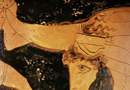

Apotheosis
Upon the completion of his twelve labours, Heracles is free of his obligation to Eurystheus and marries his second wife Deianira (remember that he killed his first wife Megara, due to a divine madness imposed by Hera). Deianira is the sister of Meleager, whom Heracles had met in the Underworld while fetching Cerberus. He there promised to marry Meleager’s sister. In order to win her, Heracles has to wrestle the river-god Achelous, who had horns and could change into different shapes (a task which recalls his wrestling match with Nereus during his search for the apples of the Hesperides. (see image 16) In the battle he breaks off one of Achelous’ horns,which he returns afterward for the reward of the horn of Amalthea: a Greco-Roman horn of plenty which provided its owner with as much food and drink as desired.
{kind=link}
Heracles and marriage, however, do not go together well. Whereas Heracles kills his first wife, Deianira unwittingly brings about the death of her husband. After the betrothal, the centaur Nessus carries Deianira across a river on her way back home (remember that Heracles is connected to centaurs also in his labours). Unfortunately, Nessus tries to rape Deianira. Heracles therefore kills him with an arrow, tipped with poison. But Nessus exacts his own revenge. As he is dying, he tells Deianira to collect some of his blood, now poisoned from the arrow, claiming it would keep Heracles from loving another woman.
But Heracles does fall in love with another woman, Iole, the daughter of Eurytus who had taught him archery. Eurytus, however, does not let Heracles have Iole and Heracles is sent into a rage (another example of the motif of madness: Heracles is in one sense a civilizing character, as he rids the countryside of destructive beasts, but also at times a savage brute). He throws Iole’s brother from the citadel of Tiryns. When Heracles goes to Delphi to ask how he could be cured of the madness which made him kill Iphitus, he received no reply which makes him rage again and try to steal the sacred tripod there. He wrestles with Apollo himself, until Zeus puts a stop to it and Heracles is told he must be sold into slavery for one year. This whole sequence recalls the original madness that leads to his subjugation by Eurystheus.
When Deianira finds out about Iole, she follows the nefarious advice of Nessus. She dips a robe in the poisoned blood of Nessus and sends it to Heracles to wear at a sacrifice to Zeus, thinking it will win him back. She does not know that it is in fact poisoned which causes Heracles to burn terribly over his entire body when he puts on the robe in the warmth of the fire for the sacrifice. In his agony, Heracles asks to be carried to Trachis (where Deianira is living), where he is placed on huge funeral pyre. As he burns on the pyre, however, the mortal part of Heracles is consumed and he gains immortality. He ascends to Olympus. When he gets there he reconciles with Hera and marries her daughter Hebe, wine-pourer of the gods. Deianira kills herself with a sword when she realizes what she has done.
In many early accounts of Heracles within mythology, it is not clear whether he is a mortal hero (equivalent to, for example, Achilles) or a man who has become a god. As a son of Zeus, Heracles has great power, but as we have seen in other myths, not all sons of Zeus become divine: we might think, for example, of Sarpedon, the son of Zeus who must also die in the Trojan war. Heracles, through his apotheosis, becomes a remarkable case of a semi-divine mortal who becomes fully divine. Attempts at divinization in mythology are not uncommon (for example, Thetis tries to make Achilles immortal, and Demeter begins to make Demophon immortal), but few actually succeed. In a mythological world that seldom allows successful crossing of the mortal-immortal divide, Heracles serves as an example of an extraordinary man, both savage and civilizing, who highlights both the boundaries and the potential fluidity of these two categories.